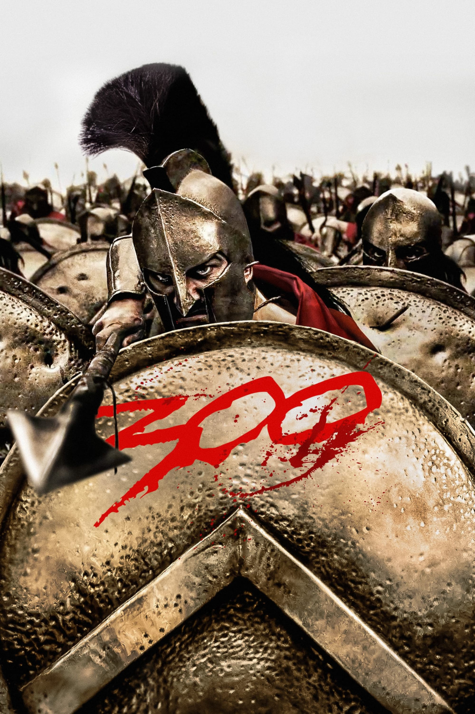

Мировая премьера: 9 марта 2007
Слоган: Обрети славу!
Сюжет: В 481 году до н.э. персидский царь Ксеркс собирает огромную армию, состоящую из сотен тысяч воинов со всей Азии и Африки, чтобы покорить раздробленную Грецию. Однако в узком Фермопильском проходе путь захватчикам преграждает спартанский царь Леонид. Вместе со своей личной гвардией из трёхсот воинов он принимает неравный бой, который навсегда войдёт в историю как символ отваги и самопожертвования.
Режиссёр: Зак Снайдер
В основе: Комикс "300" (США, 1998, автор – Фрэнк Миллер)
Серия: 300 Спартанцев
В ролях: Джерард Батлер, Лена Хиди, Доминик Уэст
| Джерард Батлер | Царь Леонид |
| Лена Хиди | Царица Горго |
| Доминик Уэст | Ферон |
| Дэвид Уэнэм | Дилий |
| Винсент Риган | Командир Артемий |
| Майкл Фассбендер | Стелий |
| Эндрю Тирнан | Эфиальт |
| Родриго Санторо | Царь Ксеркс |
| Эндрю Плевин | Дакс |
| Стивен МакХэтти | Советник |
| Питер Менса | Персидский посол |
| Том Уисдом | Астин |
Бюджет: $ 65 млн.
Кассовые сборы в США: $ 211 млн.
Кассовые сборы в мире: $ 456 млн.
Продолжительность: 1 ч. 49 мин.
Рейтинг: 7.6